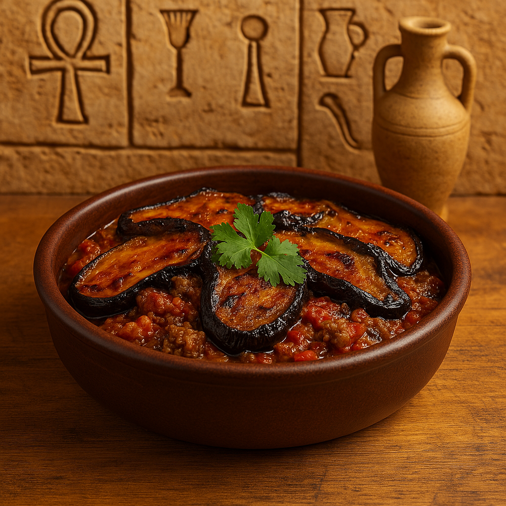

Eggplant & Minced Meat Casserole
Moussaka is a popular Egyptian comfort dish made of layers of fried eggplant, seasoned minced meat, and rich tomato sauce. It’s baked to perfection and served hot or cold.
Ingredients:
- 2 large eggplants (sliced and fried)
- 300g minced beef
- 1 onion (chopped)
- 3 cloves garlic (minced)
- 2 cups tomato puree
- 2 tablespoons tomato paste
- 1 green bell pepper (optional, sliced)
- Salt, pepper, cumin
- Oil for frying
Instructions:
- Peel and slice the eggplants, salt them, let sit, then fry until golden. Set aside on paper towels.
- In a pan, sauté onion and garlic, then add minced beef and cook until browned. Season with salt, pepper, and cumin.
- Add tomato paste and tomato puree, and let the sauce simmer for 10 minutes.
- In a baking dish, layer eggplant, meat sauce, and optionally green pepper slices.
- Bake at 180°C (350°F) for 20–25 minutes until bubbling.
- Let cool slightly and serve with bread or rice.